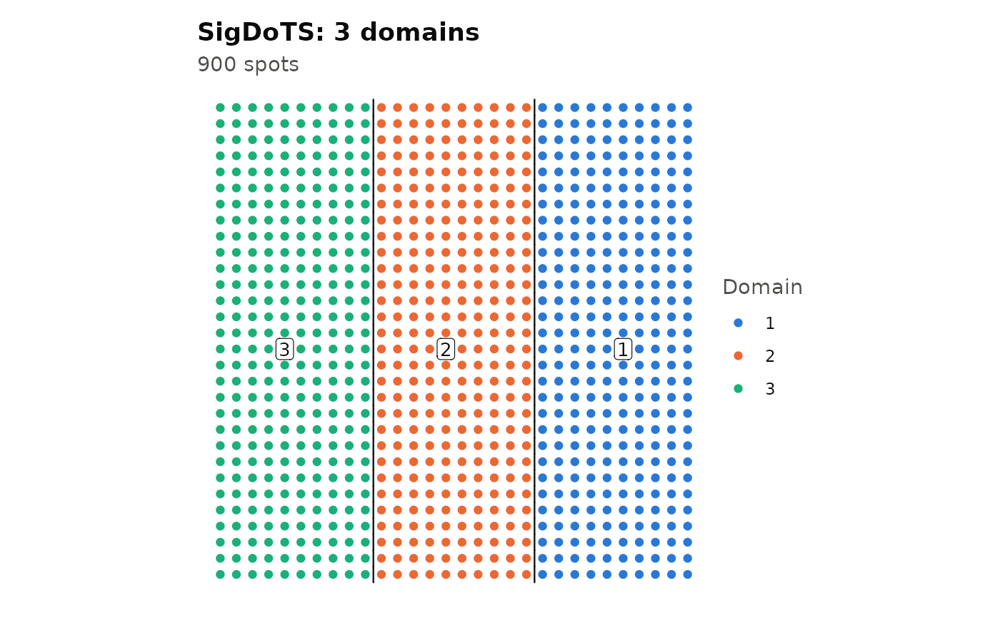

sigdots() finds the spatial domains of a spatial transcriptomics sample that are
supported by the data. It starts from an over-segmentation of the sample into K0
candidate domains (more than the number of domains you expect), arranges the candidate
domains in a tree by spatial adjacency and expression similarity, and tests the splits of
the tree from the top down, each against a model in which the part being split is a single
domain. A split is kept only when it is significant; the parts of the tree that are not
split further are the domains. The probability that the result contains any false split is
at most alpha. The section "How SigDoTS works" below describes each step.
Usage
sigdots(
x,
coords = NULL,
K0 = NULL,
genes = NULL,
assay = NULL,
cluster_method = c("kmeans", "bayesspace", "banksy"),
candidate_labels = NULL,
cluster_args = list(),
n_pcs = 15,
spatial_method = c("vecchia", "exact"),
vecchia_neighbors = 60,
alpha = 0.05,
pvalue_method = c("monte_carlo", "normal_adaptive"),
B_min = 10,
B_max = 10,
normal_n_initial = 10,
normal_n_refine = 50,
n_cores = 1,
seed = 1,
verbose = TRUE,
control = sigdots_control()
)Arguments
- x
The data, in one of three forms.
An expression matrix: one row per spot (or cell), one column per gene, with the spot identifiers as row names. The values must already be normalised, for example log(1 + 10,000 x count / total count of the spot), as
Seurat::NormalizeData()orscuttle::logNormCounts()give; do not give raw counts (sigdots_prepare()makes the matrix from raw counts). Use the most variable genes, typically 1,000 to 3,000. A matrix, a data frame or a sparseMatrixis accepted.coordsis then required.A Seurat object. The expression comes from the normalised
"data"layer of the assay given byassay(by default the object's default assay), restricted to the genes ingenes(by default the variable genes set bySeurat::FindVariableFeatures()). The spot positions come from the object's image (Seurat::GetTissueCoordinates()) or FOV unlesscoordsis given.A SpatialExperiment object, or a SingleCellExperiment or SummarizedExperiment with
coordsgiven (for example a Scanpy.h5adfile read withzellkonverter). The expression comes from the"logcounts"assay (or the assay given byassay), restricted to the genes ingenes(by default all genes when there are at most 5,000; otherwisegenesis required). The positions come fromSpatialExperiment::spatialCoords()unlesscoordsis given.
The values are used as they are: genes are not scaled to variance 1, so a gene with a larger variance has more weight in the principal components and in the split statistic.
- coords
The positions of the spots: a matrix or data frame with one row per spot, in the same order as the rows of
x(or, for an object, with the spot identifiers as row names), and two columns (x and y). Any unit can be used: SigDoTS measures distances in units of the typical distance between neighbouring spots (the median distance from a spot to its nearest other spot). Required for a matrixx; for an object it replaces the positions stored in the object.- K0
The number of candidate domains, a whole number from 2 up and smaller than the number of spots. SigDoTS merges candidate domains into domains and never splits a candidate domain, so
K0must be larger than the number of domains you expect, and large enough that every candidate domain lies inside one true domain; see "Choosing K0" below. Not needed whencandidate_labelsis given (if given as well, it must equal the number of distinct labels).- genes
A character vector of gene names: the genes to use. For a matrix
xthese must be column names ofx; for an object, row names of the object.NULL(the default) means all columns of a matrix, the variable genes of a Seurat object, or all genes of a SpatialExperiment object that has at most 5,000 genes.- assay
For an object only: the name of the assay to take the expression from, a character string.
NULL(the default) means the Seurat object's default assay (its"data"layer), or the"logcounts"assay of a SpatialExperiment object.- cluster_method
How the spots are divided into the
K0candidate domains, and, in every test, how each simulated dataset is divided into candidate domains. One of"kmeans"(the default): k-means clustering of the firstn_pcsprincipal components ofx(10 random starts, at most 100 iterations). Fast; it groups spots by expression only, so on real tissue its candidate domains can be scattered across the section."banksy": the BANKSY method, which clusters each spot by its own expression together with the average expression of its neighbours and so gives spatially coherent candidate domains (k-means on the BANKSY principal components). Used in the SigDoTS paper for real tissue. Needs the Bioconductor package Banksy (R 4.4 or later)."bayesspace": the BayesSpace method, a Bayesian model with a spatial prior designed for the regular spot arrays of Visium and ST. Needs the Bioconductor package BayesSpace; it runs once for every simulated dataset, which makes it slow.
- candidate_labels
Your own candidate domains, instead of those of
cluster_method: a vector with one label per spot (numbers, character strings or a factor, in the order of the spots, without missing values), or, for an object, the name of a metadata column that holds them (for example"seurat_clusters"). The tree is then built from these labels andK0is their number of distinct values. The simulated datasets are still divided withcluster_method, so the test is calibrated for labels made by that method: when your labels come from BANKSY or BayesSpace, setcluster_method = "banksy"or"bayesspace"as well.NULL(the default) means the candidate domains are made withcluster_method.- cluster_args
A named list of settings passed to BANKSY or BayesSpace (not used for k-means). For
"banksy":lambda(the weight of the neighbourhood, 0.2 by default),k_geom(the number of neighbours, 15),npcs(the number of BANKSY principal components,min(n_pcs, 20)) anduse_agf(FALSE). For"bayesspace":platform("Visium"or"ST","Visium"by default),init.method("mclust"),model("t"),nrep(5000 MCMC iterations),burn.in(100) andgamma(3).list()(the default) uses all these defaults.- n_pcs
The number of principal components of
x(a whole number, 15 by default) used by k-means to make the candidate domains, and to compute the mean of each candidate domain when the candidate domains are merged into the tree. The split statistic itself uses all genes.- spatial_method
How the spatial covariance of the simulated data is computed:
"vecchia"(the default): the Vecchia approximation, in which each spot depends directly only on itsvecchia_neighborsnearest spots. Memory and time grow in proportion to the number of spots, so it can be used for any sample size."exact": the exact computation, which stores and decomposes a matrix with one row and one column per spot of the part being tested. Its memory grows with the square of the number of spots and its time with the cube; the run stops before it starts if a test would need more memory thanmax_exact_memory_gibofsigdots_control().
- vecchia_neighbors
For
spatial_method = "vecchia": the number of nearest spots each spot depends on (a whole number, 60 by default). More is closer to the exact computation and slower.- alpha
The significance level for the whole tree, a number between 0 and 1 (0.05 by default): the probability that the result contains any false split is at most
alpha. A test on m of the n spots uses the levelalpha * (m - 1) / (n - 1).- pvalue_method
How the p-value of each test is computed from the simulated datasets:
"monte_carlo"(the default, used for the main results of the SigDoTS paper): the p-value is (1 + the number of simulated datasets that split at least as clearly as the data) / (1 + the number of simulated datasets). It makes no assumption about the distribution of the split statistic. The number of simulated datasets is set byB_minandB_max."normal_adaptive": the p-value is the probability, under a normal distribution with the mean and standard deviation of the simulated statistics, of a statistic at most as large as the observed one. Each test first simulatesnormal_n_initialdatasets; when the p-value from these lies between the test's level divided bynormal_bandand the level multiplied bynormal_band(seesigdots_control()), it simulates more, up tonormal_n_refinein all, and computes the p-value again from all of them. A test thus uses 10 or 50 simulated datasets with the defaults, whatever its level, whereas a Monte Carlo test needs about1 / levelof them to keep a split; it is therefore much faster for the lower tests of a large tree. It relies on the simulated statistics having roughly a normal distribution, and on their mean and standard deviation, estimated from few datasets.
- B_min, B_max
For
pvalue_method = "monte_carlo": the smallest and the largest number of simulated datasets for one test (whole numbers with1 <= B_min <= B_max, both 10 by default).A test simulates at least
B_mindatasets and stops as soon as its decision can no longer change, so a split that is clearly not significant stops early.When
1 / (B_max + 1)is larger than the test's level, the p-value could never reach the level;B_maxis then raised for that test toceiling(1 / level) - 1(19 at the level 0.05), up toB_capofsigdots_control().With the defaults, every test therefore uses the smallest number of simulated datasets that can establish its decision, as in the SigDoTS paper's simulations: a split is kept only when the data split more clearly than every simulated dataset.
Larger values give finer p-values and a better chance of keeping a true split that is only moderately clear; the run time grows in proportion. The error guarantee holds for any values.
- normal_n_initial, normal_n_refine
For
pvalue_method = "normal_adaptive": the number of simulated datasets every test starts with (a whole number from 2 up, 10 by default), and the number it uses in all when its first p-value is near the level (a whole number not smaller thannormal_n_initial, 50 by default). The defaults are those described in the SigDoTS paper. Larger values make the estimated mean and standard deviation more precise.- n_cores
The number of CPU cores used to simulate and cluster the datasets of each test in parallel (a whole number, 1 by default). The result does not depend on it. On Windows only 1 core is used, because the parallel computation relies on process forking (
parallel::mclapply()).- seed
The random seed, one number (1 by default). The same data, arguments and seed give the same result on any number of cores. Each simulated dataset has its own seed, derived from
seed, the node and the dataset's number. The random-number state of your session is restored whensigdots()returns.- verbose
How much progress to print:
TRUE(the default) prints one line per test (its node, number of spots, decision, number of simulated datasets and time);FALSEprints nothing;2prints the detailed progress of every computation.- control
The settings that rarely need changing, made with
sigdots_control().
Value
An object of class "sigdots". Read it with print(fit) (the split tree),
summary(fit) (the settings and one row per test; see summary.sigdots()), domains()
(the domain of every spot as a table), plot(fit) (maps, the tree and the spatial
correlation; see plot.sigdots()) and add_domains() (writes the domains into a Seurat or
SpatialExperiment object). For programming, the object is a list with these components:
domainsInteger vector, one value per spot in the order of the input: the domain of the spot, numbered 1, 2, ... from left to right in the printed tree;
NAfor a spot in a part of the tree that could not be tested.domain_nodesThe node numbers of the domains, in the order of their numbers.
untested_nodes,untested_spot_nodeThe node numbers of the parts that could not be tested because their spatial parameters could not be estimated, and, for every spot, the node number of the untested part it lies in (
NAotherwise).candidate_domains,candidate_namesThe candidate domain of every spot, numbered 1 to
K0, and the name of each candidate domain (your own label whencandidate_labelswas given).treeA data frame with one row per node of the tree:
node,parent,leftandright(node numbers;NAwhere there is none),is_candidate_domain(a bottom end of the tree),spots,candidate_domains(how many lie under the node) andmerge_score(the increase in the within-group sum of squares caused by the merge that made the node).rootThe node number of the top of the tree.
spot_indices,groups_underLists named by node number: the row numbers of the spots under each node, and the candidate domains under each node.
testsA data frame with one row per node the testing reached, from the top, with the columns of
summary(fit)$testsand more:parent,left_spots,right_spots,tested,skip_reason,null_median(median statistic of the simulated datasets),null_max(the largest number of simulated datasets the test could have used),clearer(simulated datasets that split at least as clearly as the data),stop_reason,p_initialandrefined(normal approximation: the p-value from the first datasets, and whether more were simulated),ellandeta(the estimated spatial parameters), five flags for estimates at the ends of their ranges (ell_at_lower_end,ell_at_upper_end,ell_capped,eta_at_lower_bound,eta_at_upper_bound),backendandvecchia_neighbors(the spatial computation),pieces(sizes of separate pieces, seesummary.sigdots()), and, for a part whose spatial parameters could not be estimated,spatial_fit_reason,spatial_fit_usable_binsandmin_pairs_per_bin.null_statisticsA list named by node number: the split statistics of the simulated datasets of each test, in the order they were simulated.
correlogramsA list named by node number: for each test, a data frame with the spatial correlation at each distance (
distancein spot spacings,correlationobserved,fittedby the model,pairsused), as drawn byplot(fit, type = "correlogram").coords,spot_ids,n_spots,n_genesThe positions and identifiers of the spots, and the size of the data.
spot_piecesThe sizes of the separate pieces of the spots' nearest-neighbour graph (one number when all spots are connected).
settingsA list of the arguments used, including
control.call,elapsed_sec,versionThe call, the run time in seconds and the version of SigDoTS.
How SigDoTS works
Candidate domains. The spots are divided into
K0candidate domains withcluster_method, or taken fromcandidate_labels. SigDoTS never splits a candidate domain; it decides which candidate domains belong together. It therefore assumes that each candidate domain lies inside one true domain.The tree. Each spot is linked to its
k_nnnearest spots (seesigdots_control()); two candidate domains are neighbours when some of their spots are linked. Of all pairs of neighbouring groups, the pair whose merge increases the within-group sum of squares the least (Ward's criterion, computed on the means of the groups in the firstn_pcsprincipal components) is merged, and this is repeated until one group is left. The result is a binary tree whose top is the whole sample and whose bottom ends are the candidate domains; every merge in it joins two groups that touch in space.The statistic. The splits are tested from the top. The statistic of a split is the within-group sum of squares of its two sides divided by the total sum of squares of the part, summed over all genes: a number between 0 and 1, smaller for a clearer split.
The reference. To judge whether the observed statistic is small, SigDoTS simulates datasets for the spots of the part from a model in which the part is a single domain (step 5). Each simulated dataset is divided into as many candidate domains as the part has, with the same
cluster_method; its tree is built in the same way, and the statistic of its top split is computed. Because the simulated data go through the same clustering and the same tree building as the real data, the comparison accounts for the separation that clustering finds even in data with only one domain.The single-domain model. In the model, every spot of the part has the same mean expression, and the noise is correlated both between genes and between nearby spots.
The spatial correlation is described by two numbers estimated from the part's own data:
eta, the share of the noise variance that is spatially correlated (frometa_minto 1), andell, the distance over which the correlation reaches (Matérn 3/2 correlation function, in spot spacings).They are estimated from pairs of spots in the same candidate domain, so that differences between candidate domains are not taken for spatial correlation: after the mean of each candidate domain is removed, the correlation between such pairs at each distance is matched to the correlation the model predicts (
plot(fit, type = "correlogram")shows both).The correlation between genes is then estimated from the data, with the candidate-domain means and the fitted spatial correlation removed, as a few strong components (at most
r_cap) plus independent noise of equal variance.Simulating from the model needs a factor of the spatial covariance matrix of the part's spots, computed exactly or with the Vecchia approximation (
spatial_method).
The decision. The p-value (
pvalue_method) is compared with the level of the test,alpha * (m - 1) / (n - 1)for a part of m of the n spots. If it is at most the level, the split is kept and both sides are tested in turn; otherwise the part is a domain. With these levels, the probability that any kept split is false (the family-wise error rate) is at mostalpha(the scheme of Kimes et al., 2017).Parts that are not tested. A part with fewer than
min_node_sizespots, a part whose split would leave fewer thanmin_child_sizespots on a side, and a single candidate domain are domains without a test. A part where the spatial parameters cannot be estimated (too few pairs of spots in the same candidate domain) is left untested together with everything below it, and its spots get no domain (NA);sigdots()warns. Where the spots of a part fall into separate pieces on the nearest-neighbour graph, the pieces are joined by their closest spots before the trees are built (seesummary.sigdots()).
Choosing K0
K0 must be larger than the number of domains you expect, and fine enough that every
candidate domain lies inside one true domain, because a candidate domain that straddles two
true domains can never be split. About twice the expected number of domains is a reasonable
start. A very large K0 makes the lower parts of the tree small: the spatial parameters need
about 80 or more spots in a part (on a regular grid of spots), and small parts have small
levels, so a Monte Carlo test there needs many simulated datasets to keep a split.
Run time and memory
Measured on simulated data with 2,000 genes and three domains (K0 = 5, exact computation,
10 cores; peak memory of the whole run): 900 spots, 32 seconds and 3.5 GiB; 2,500 spots,
4.3 minutes and 6.1 GiB; 10,000 spots, 18 minutes and 19.8 GiB. With the default Vecchia
approximation, 2,500 spots took a median of 4.0 minutes (three domains) and 1.4 minutes (one
domain) on 10 cores. Beyond about 20,000 spots use the Vecchia approximation: the exact
computation at 50,176 spots took 12 hours and 206 GiB. The estimation of the spatial
parameters computes the distances between all pairs of spots of the part being tested, so
its memory grows with the square of the number of spots whatever spatial_method is: one
estimation with 200 genes on a part of 10,000 spots used 2.1 GiB, of 19,881 spots 7.4 GiB,
and of 40,000 spots 29 GiB.
Warnings at the end of a run
The spatial parameters could not be estimated at ... part(s) of the tree: a part has too few spots for the estimation; it is marked
[!] NOT TESTEDand its spots get no domain (NA). A smallerK0makes the parts larger.The estimated spatial range ell is at the upper end of its allowed range: the true range may be longer, which can make splits easier to keep; rerun with a wider
ell_rangeinsigdots_control().The test would need more than B_cap simulated datasets: raise
B_capinsigdots_control(), or accept that part as a domain.
Before computing anything, sigdots() checks its input and stops with a message that names
the argument at fault (for example, when x has as many columns as coords has rows, it
suggests t(x)). A simulated dataset that fails also stops the run, rather than being
dropped. Every message is explained in vignette("faq").
References
Wang H, Cao F, Shen H, Liu Y, Yan G (2026). Statistical significance testing for spatial domain detection in spatial transcriptomics. Manuscript.
Kimes PK, Liu Y, Hayes DN, Marron JS (2017). Statistical significance for hierarchical clustering. Biometrics 73(3), 811-821.
Vecchia AV (1988). Estimation and model identification for continuous spatial processes. Journal of the Royal Statistical Society Series B 50(2), 297-312.
Katzfuss M, Guinness J (2021). A general framework for Vecchia approximations of Gaussian processes. Statistical Science 36(1), 124-141.
Singhal V, Chou N, Lee J, et al. (2024). BANKSY unifies cell typing and tissue domain segmentation for scalable spatial omics data analysis. Nature Genetics 56(3), 431-441.
Zhao E, Stone MR, Ren X, et al. (2021). Spatial transcriptomics at subspot resolution with BayesSpace. Nature Biotechnology 39(11), 1375-1384.
See also
sigdots_control() for the other settings, summary.sigdots() for reading the
result, vignette("SigDoTS") for a worked example, vignette("own-data") for Seurat and
SpatialExperiment objects and the choice of settings, vignette("how-it-works") for the
method with figures.
Examples
# \donttest{
# about 20 seconds on one core
fit <- sigdots(sigdots_example$x, sigdots_example$coords, K0 = 5)
#> SigDoTS: 900 spots, 200 genes; 5 candidate domains; testing from the top of the tree
#> test at node 9 (900 spots, 5 candidate domains): split (19 simulated datasets) [11 s]
#> test at node 7 (300 spots, 2 candidate domains): no split (10 simulated datasets) [2 s]
#> test at node 8 (600 spots, 3 candidate domains): split (30 simulated datasets) [8 s]
#> test at node 6 (300 spots, 2 candidate domains): no split (15 simulated datasets) [2 s]
fit
#> SigDoTS: 900 spots, 200 genes
#> Number of domains: 3 (spots per domain: 300, 300, 300)
#>
#> Split tree ([node] spots, candidate domains: decision):
#> [9] 900 spots, candidate domains 1,2,3,4,5: split
#> ├── [7] 300 spots, candidate domains 2,3: no split => DOMAIN 1
#> │ ├── candidate domain 2 109 spots
#> │ └── candidate domain 3 191 spots
#> └── [8] 600 spots, candidate domains 1,4,5: split
#> ├── [4] 300 spots, candidate domain 4 => DOMAIN 2
#> └── [6] 300 spots, candidate domains 1,5: no split => DOMAIN 3
#> ├── candidate domain 1 103 spots
#> └── candidate domain 5 197 spots
#>
#> Use summary() for the tests.
summary(fit)
#> SigDoTS 0.2.5.8
#> Data: 900 spots x 200 genes
#> Start: k-means on 15 principal components; 5 candidate domains
#> Spatial: Vecchia approximation (60 neighbours)
#> Level: 0.05 for the whole tree
#> P-values: Monte Carlo
#>
#> Number of domains: 3 (spots per domain: 300, 300, 300)
#>
#> Split tree:
#> [9] 900 spots, candidate domains 1,2,3,4,5: split
#> ├── [7] 300 spots, candidate domains 2,3: no split => DOMAIN 1
#> │ ├── candidate domain 2 109 spots
#> │ └── candidate domain 3 191 spots
#> └── [8] 600 spots, candidate domains 1,4,5: split
#> ├── [4] 300 spots, candidate domain 4 => DOMAIN 2
#> └── [6] 300 spots, candidate domains 1,5: no split => DOMAIN 3
#> ├── candidate domain 1 103 spots
#> └── candidate domain 5 197 spots
#>
#> Tests, from the top:
#> test spots statistic null_used p level decision
#> [9] 900 0.718 19 0.0500 0.0500 split
#> [7] 300 0.935 10 0.2727 0.0166 no split
#> [8] 600 0.903 30 0.0323 0.0333 split
#> [6] 300 0.946 15 0.1250 0.0166 no split
table(domain = domains(fit)$domain, true_region = sigdots_example$region)
#> true_region
#> domain 1 2 3
#> 1 0 0 300
#> 2 0 300 0
#> 3 300 0 0
plot(fit)

plot(fit, type = "tree")
 # more simulated datasets per test (finer p-values), on 2 cores
fit2 <- sigdots(sigdots_example$x, sigdots_example$coords, K0 = 5,
B_min = 50, B_max = 50, n_cores = 2)
#> SigDoTS: 900 spots, 200 genes; 5 candidate domains; testing from the top of the tree
#> test at node 9 (900 spots, 5 candidate domains): split (50 simulated datasets) [48 s]
#> test at node 7 (300 spots, 2 candidate domains): no split (50 simulated datasets) [22 s]
#> test at node 8 (600 spots, 3 candidate domains): split (50 simulated datasets) [38 s]
#> test at node 6 (300 spots, 2 candidate domains): no split (50 simulated datasets) [18 s]
# the normal approximation of the p-value
fit3 <- sigdots(sigdots_example$x, sigdots_example$coords, K0 = 5,
pvalue_method = "normal_adaptive")
#> SigDoTS: 900 spots, 200 genes; 5 candidate domains; testing from the top of the tree
#> test at node 9 (900 spots, 5 candidate domains): split (10 simulated datasets) [9 s]
#> test at node 7 (300 spots, 2 candidate domains): no split (50 simulated datasets) [5 s]
#> test at node 8 (600 spots, 3 candidate domains): split (10 simulated datasets) [5 s]
#> test at node 6 (300 spots, 2 candidate domains): no split (50 simulated datasets) [5 s]
summary(fit3)
#> SigDoTS 0.2.5.8
#> Data: 900 spots x 200 genes
#> Start: k-means on 15 principal components; 5 candidate domains
#> Spatial: Vecchia approximation (60 neighbours)
#> Level: 0.05 for the whole tree
#> P-values: normal approximation (10 simulated datasets per test, 50 when p is near the level)
#>
#> Number of domains: 3 (spots per domain: 300, 300, 300)
#>
#> Split tree:
#> [9] 900 spots, candidate domains 1,2,3,4,5: split
#> ├── [7] 300 spots, candidate domains 2,3: no split => DOMAIN 1
#> │ ├── candidate domain 2 109 spots
#> │ └── candidate domain 3 191 spots
#> └── [8] 600 spots, candidate domains 1,4,5: split
#> ├── [4] 300 spots, candidate domain 4 => DOMAIN 2
#> └── [6] 300 spots, candidate domains 1,5: no split => DOMAIN 3
#> ├── candidate domain 1 103 spots
#> └── candidate domain 5 197 spots
#>
#> Tests, from the top:
#> test spots statistic null_used p level decision
#> [9] 900 0.718 10 0.0e+00 0.0500 split
#> [7] 300 0.935 50 0.0284 0.0166 no split
#> [8] 600 0.903 10 1.0e-83 0.0333 split
#> [6] 300 0.946 50 0.2449 0.0166 no split
# }
# more simulated datasets per test (finer p-values), on 2 cores
fit2 <- sigdots(sigdots_example$x, sigdots_example$coords, K0 = 5,
B_min = 50, B_max = 50, n_cores = 2)
#> SigDoTS: 900 spots, 200 genes; 5 candidate domains; testing from the top of the tree
#> test at node 9 (900 spots, 5 candidate domains): split (50 simulated datasets) [48 s]
#> test at node 7 (300 spots, 2 candidate domains): no split (50 simulated datasets) [22 s]
#> test at node 8 (600 spots, 3 candidate domains): split (50 simulated datasets) [38 s]
#> test at node 6 (300 spots, 2 candidate domains): no split (50 simulated datasets) [18 s]
# the normal approximation of the p-value
fit3 <- sigdots(sigdots_example$x, sigdots_example$coords, K0 = 5,
pvalue_method = "normal_adaptive")
#> SigDoTS: 900 spots, 200 genes; 5 candidate domains; testing from the top of the tree
#> test at node 9 (900 spots, 5 candidate domains): split (10 simulated datasets) [9 s]
#> test at node 7 (300 spots, 2 candidate domains): no split (50 simulated datasets) [5 s]
#> test at node 8 (600 spots, 3 candidate domains): split (10 simulated datasets) [5 s]
#> test at node 6 (300 spots, 2 candidate domains): no split (50 simulated datasets) [5 s]
summary(fit3)
#> SigDoTS 0.2.5.8
#> Data: 900 spots x 200 genes
#> Start: k-means on 15 principal components; 5 candidate domains
#> Spatial: Vecchia approximation (60 neighbours)
#> Level: 0.05 for the whole tree
#> P-values: normal approximation (10 simulated datasets per test, 50 when p is near the level)
#>
#> Number of domains: 3 (spots per domain: 300, 300, 300)
#>
#> Split tree:
#> [9] 900 spots, candidate domains 1,2,3,4,5: split
#> ├── [7] 300 spots, candidate domains 2,3: no split => DOMAIN 1
#> │ ├── candidate domain 2 109 spots
#> │ └── candidate domain 3 191 spots
#> └── [8] 600 spots, candidate domains 1,4,5: split
#> ├── [4] 300 spots, candidate domain 4 => DOMAIN 2
#> └── [6] 300 spots, candidate domains 1,5: no split => DOMAIN 3
#> ├── candidate domain 1 103 spots
#> └── candidate domain 5 197 spots
#>
#> Tests, from the top:
#> test spots statistic null_used p level decision
#> [9] 900 0.718 10 0.0e+00 0.0500 split
#> [7] 300 0.935 50 0.0284 0.0166 no split
#> [8] 600 0.903 10 1.0e-83 0.0333 split
#> [6] 300 0.946 50 0.2449 0.0166 no split
# }